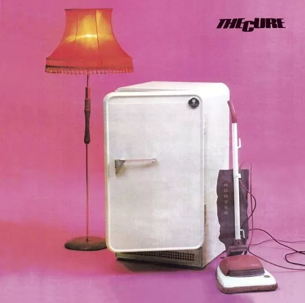
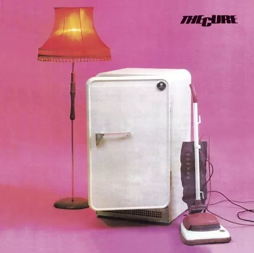

Sobre The Cure
A história do The Cure começou em 1972, quando Robert James Smith ganhou sua primeira guitarra, aos 13 anos. Ele convidou seus amigos de escola Laurent (Lol), Andrew Tolhurst (bateria) e Michael Stephen Dempsey (baixo) para tocarem com ele. Eles formaram a banda Malice e chegaram a fazer alguns shows no Marquee Club. Mas Robert achava que não era tão convincente nos vocais e, por isso, acabou convidando outros dois amigos, que além de cantarem se revezariam na guitarra. Infelizmente, a dupla acabou não se adaptando à banda. De volta à formação original, o grupo decidiu adotar um novo nome "Easy Cure" e incluíram um guitarrista chamado Paul (Porl) Stephen Thompson e um vocalista fã de David Bowie, Peter.
Não demoraram muito e entraram em um concurso da Hansa Records, o maior selo independente da Alemanha com uma demo gravada na sala de jantar dos pais de Robert. A banda acabou ganhando o 1º lugar e o dinheiro do prêmio foi investido em equipamentos para pequenos shows nos arredores de Crawley. Peter anunciou sua saída do grupo e, assim, Robert retornou ao vocal. Alguns meses depois, a banda acabou se dirigindo para os estúdios SAV de Londres para gravarem 10 músicas demo. A primeira música escolhida seria 'Killing an Arab"™, baseada no livro O Estrangeiro de Albert Camus e a gravadora ficou receosa de ofender a comunidade árabe. A Hansa não gostou de nenhuma das outras músicas e rompeu contrato com a banda em 1978.
Desempregados e com os sonhos quase desmoronando, Thompson acabou deixando o Easy Cure. Dempsey foi trabalhar como porteiro de um hospital psiquiátrico e Tolhurst foi trabalhar em um laboratório químico. Robert insistiu na carreira artística. Ele mandou uma nova fita demo com quatro músicas para grandes gravadoras: "Boys Don't Cry", "Fire in Cairo", "It's not you" e "10.15 Saturday Night"™. A fita chegou à s gravadoras como propriedade do The Cure. Todas as gravadoras recusaram a fita, menos Chris Parry, um tipo de caça talentos da Polydor. Ele produzia o The Jam e o Siouxsie and The Banshees, e estava procurando bandas para criar seu próprio selo chamado Fiction. Chris Parry foi assistir a um show da banda após conhecê-los em seu escritório e ofereceu um contrato de seis meses, que foi assinado em setembro de 1978. Depois de alguns shows, eles estavam prontos para lançar as músicas "Killing an Arab" e "10.15 Saturday Night" como singles. Como a Polydor recusou-se a vender qualquer coisa do The Cure antes do Natal, Chris não teve outro jeito senão lançar o single por um selo independente chamado Small Wonder.
Mais tarde, com a aproximação de Robert e Reeves Gabrels, guitarrista de David Bowie, é lançado um single chamado 'Wrong Number', que foi usado como suporte na coletânea chamada Galore, na mesma linha de 'Standing on a Beach'. Foi lançado a cover de 'World in My Eyes' do Depeche Mode numa coletânea de tributo ao grupo, e sob o nome de Cogasm (Cooper, Gabrels e Smith). Também foi lançado o single 'A Sign from God' para a trilha do filme Orgazmo.
 
